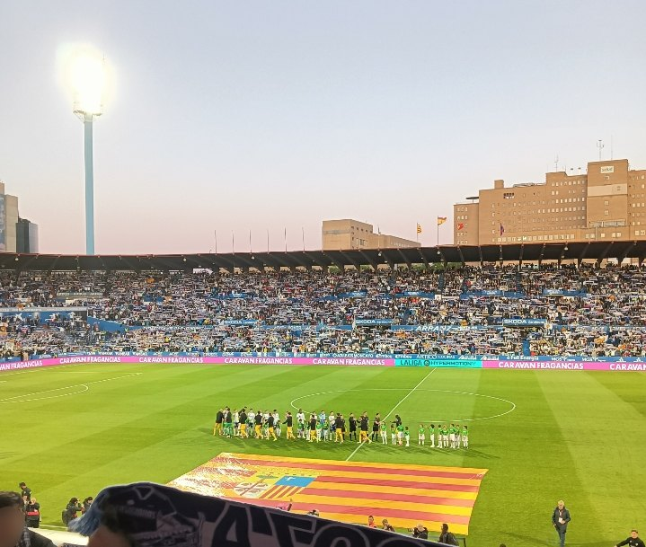

Proyectos / Real Zaragoza 2026/27 / Primera Federación · Grupo 2 / Simulación
Investigación · Simulación Monte Carlo
¿Y si el grupo 2 se jugara 10.000 veces?
Este estudio simula 10.000 veces el resto de la temporada de Primera Federación con un modelo de goles ajustado a los resultados. Tras la jornada 7, el Real Zaragoza acaba entre los cinco primeros en el 63 % de las simulaciones.
- Pregunta
- ¿Qué probabilidad tiene cada equipo de ascender, jugar el playoff o descender?
- Datos
- Resultados de los 70 partidos jugados · 310 partidos pendientes
- Herramientas
- Python (pandas, NumPy, SciPy) · código y datos

Resultados
Favorito, pero lejos de estar decidido
El Zaragoza termina primero en el 20 % de las simulaciones y entre el segundo y el quinto en el 43 %. Es el equipo con más opciones del grupo, pero en el 37 % de las temporadas simuladas se queda fuera de los cinco primeros. El riesgo de descenso es del 2 %.
En 8 de cada 10 simulaciones acaba con entre 51 y 76 puntos. Quedan 31 jornadas: la tabla de hoy cuenta, pero todavía queda casi toda la temporada.

Cómo ha cambiado
Con los datos de la jornada 3, la probabilidad de acabar entre los cinco primeros era del 30 %. Los resultados desde entonces la han llevado al 63 %.


| # | Equipo | Puntos medios | Ascenso directo | Playoff | Descenso |
|---|---|---|---|---|---|
| 1 | Real Zaragoza | 63,3 | 20 % | 43 % | 2 % |
| 2 | Villarreal B | 61,9 | 16 % | 41 % | 3 % |
| 3 | Real Murcia | 60,7 | 13 % | 39 % | 4 % |
| 4 | Alcorcón | 59,5 | 11 % | 37 % | 5 % |
| 5 | Cartagena | 58,7 | 9 % | 35 % | 6 % |
| 6 | Real Jaén | 57,3 | 7 % | 31 % | 8 % |
| 7 | Antequera | 54,9 | 4 % | 24 % | 13 % |
| 8 | Hércules | 53,8 | 3 % | 21 % | 15 % |
| 9 | Atlético Madrileño | 53,6 | 3 % | 22 % | 17 % |
| 10 | UD Ibiza | 52,8 | 3 % | 19 % | 18 % |
| 11 | Real Madrid Castilla | 52,2 | 2 % | 18 % | 20 % |
| 12 | SD Huesca | 51,7 | 2 % | 16 % | 21 % |
| 13 | Gimnàstic | 50,4 | 1 % | 13 % | 25 % |
| 14 | Sant Andreu | 50,3 | 2 % | 13 % | 25 % |
| 15 | Algeciras | 47,1 | 1 % | 8 % | 39 % |
| 16 | CE Europa | 46,0 | 1 % | 6 % | 43 % |
| 17 | CDA Águilas FC | 44,9 | <1 % | 5 % | 48 % |
| 18 | Rayo Majadahonda | 43,8 | <1 % | 4 % | 53 % |
| 19 | CD Teruel | 41,7 | <1 % | 2 % | 62 % |
| 20 | Juventud Torremolinos CF | 39,1 | <1 % | 2 % | 71 % |
Método
Un modelo de goles y 10.000 temporadas
Cada equipo tiene una fuerza de ataque y otra de defensa, y el local juega con ventaja. Los goles de cada equipo en un partido siguen una distribución de Poisson cuya media depende de su ataque, de la defensa del rival y de quién juega en casa. Es el modelo clásico de Maher, el punto de partida de casi todos los modelos de resultados.
Con 7 jornadas cada equipo ha jugado 7 partidos, y una racha corta puede engañar. Por eso las fuerzas se acercan a la media del grupo salvo que los resultados lo justifiquen. Cuánto se acercan se decide con validación cruzada: el modelo se ajusta dejando fuera una jornada cada vez y se elige la opción que mejor predice la jornada que falta. La respuesta fue acercarlas mucho: a estas alturas, los resultados dicen poco de la fuerza real de cada equipo.
En cada simulación se sortean unas fuerzas dentro de su margen de incertidumbre, se juegan los 310 partidos pendientes y la tabla se ordena con el reglamento de la competición: puntos, puntos y diferencia de goles entre los empatados, diferencia general y goles a favor. Antes de simular, el programa comprueba que los resultados reproducen exactamente la clasificación publicada tras la jornada 7; si no, se detiene.
Lo que la simulación no sabe
- No sabe de lesiones, fichajes, sanciones ni cambios de entrenador.
- Supone que los goles de cada equipo en un partido son independientes; este tipo de modelo suele dar algo menos de empates de los que hay.
- El juego limpio y el partido de desempate no se pueden simular: si todo lo demás coincide, se sortea.
- Una probabilidad no es un pronóstico: un 20 % ocurre una de cada cinco veces.
Se actualiza después de cada jornada.
Trabajo verificable
Datos, código y comprobaciones
Siete pruebas automáticas verifican el cálculo de la clasificación, los desempates a dos y a tres, las probabilidades de cada resultado y que el modelo distingue a un equipo fuerte en una liga inventada.
Ver el código · Descargar las probabilidades (CSV)
Resultados: Sofascore, contrastados con la clasificación de BeSoccer tras cada jornada. Reglamento: normas de competición de Primera Federación 2026/27 (ascenso del primero, playoff del segundo al quinto y descenso del 16.º al 20.º).